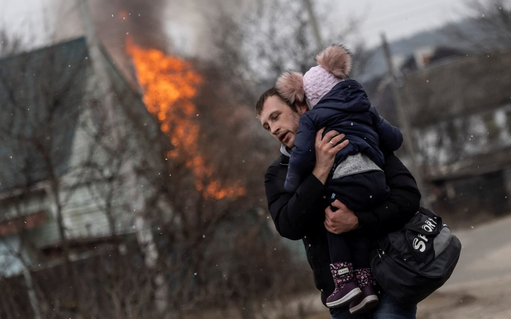
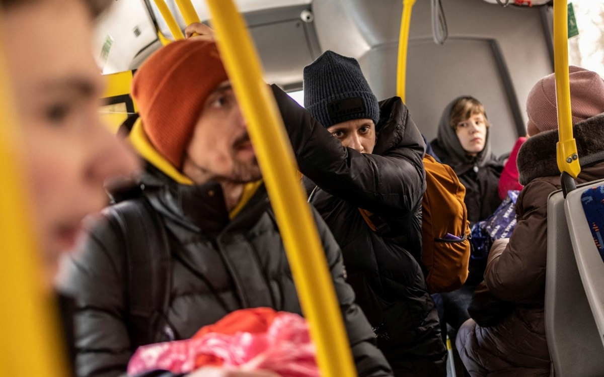
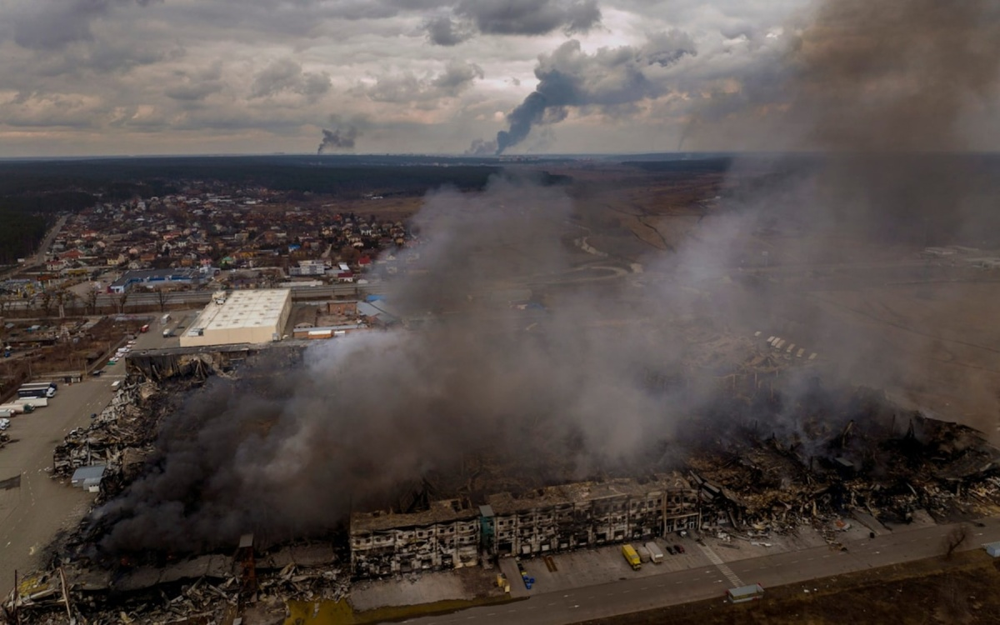
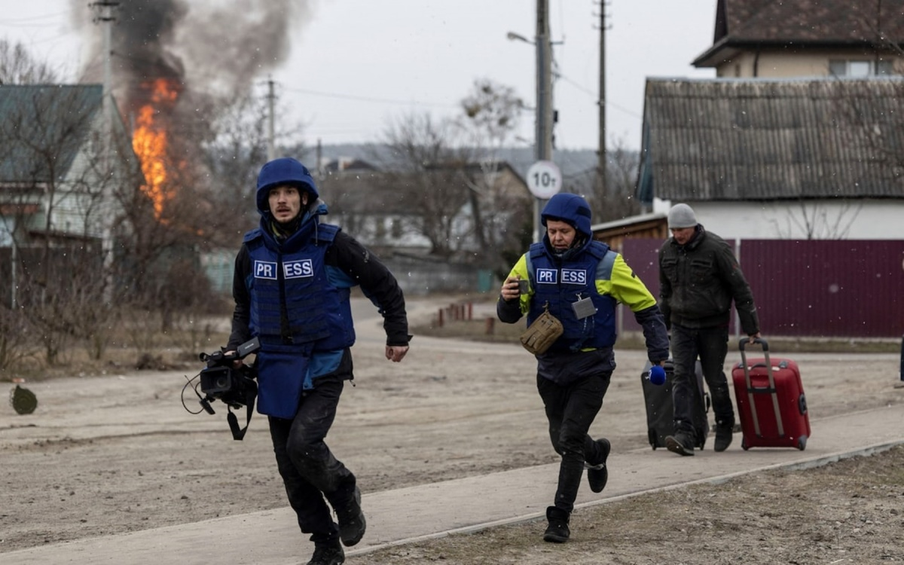

Chủ nhật, 6/3/2022, 23:20 (GMT+7)
Dòng người chạy pháo kích ở thành phố sát Kiev
Hàng nghìn người sơ tán khỏi Irpin, thành phố nằm sát thủ đô Kiev của Ukraine, vào cuối tuần này vì giao tranh ngày càng dữ dội.

Tình hình chiến sự tại Ukraine trong hai ngày cuối tuần tiếp tục căng thẳng khi các lực lượng Nga đang từng bước áp sát thủ đô Kiev. Hai bên đã liên tục đáp trả nhau bằng pháo kích tầm xa dọc theo khu vực bên ngoài Kiev, khiến các thành phố tập trung nhiều dân lao động như Bucha và Irpin rơi vào tầm ngắm. Trong ảnh là những người dân ở Irpin, cách Kiev khoảng 25 km về phía tây bắc, đang vội vã tìm nơi trú ẩn ngày 6/3.
Một người đàn ông bế con tháo chạy khỏi Irpin ngày 6/3.
Người dân địa phương bên trong một chiếc xe buýt đưa họ rời Irpin sau khi thành phố hứng chịu pháo kích ngày 6/3.
Hàng nghìn người khác đang cố gắng thoát khỏi Irpin bằng cách đi theo một con đường vòng dẫn đến ga xe lửa chính của Kiev từ phía tây nam.
Một hàng ôtô kéo dài ít nhất 5 km đã vượt qua hàng chục trạm kiểm soát do quân tình nguyện Ukraine ở tây Kiev dựng lên hôm 5/3. Nhiều người dán thông điệp "xe có trẻ em" trên kính chắn gió.
Masha Shuta, 15 tuổi, ước tính rằng khoảng 100 người có thể vẫn còn trốn trong các tầng hầm tại khu vực em sống ở Irpin. "Họ không có nơi nào để đi", Shuta cho hay. "Nhưng ở lại cũng không an toàn".
Người dân đi qua một cây cầu bị phá hủy để vượt sông Irpin và rời khỏi thành phố ngày 5/3. Trước đó, lực lượng Ukraine phá cây cầu này để chặn bước tiến của quân Nga.
Khói đen bốc lên tại thị trấn Irpin vì pháo kích ngày 6/3.

Các phóng viên chạy tìm chỗ ẩn nấp ở Irpin ngày 6/3.
Giao tranh đã khiến hơn 1,5 triệu người phải sơ tán khỏi Ukraine sang các nước láng giềng. Đây được cho là cuộc di cư vội vã nhất và lớn nhất của nhân loại trong lịch sử hiện đại.
"Tôi đã xử lý các trường hợp khẩn cấp về người sơ tán trong gần 40 năm qua và hiếm khi thấy một cuộc di cư nào nhanh chóng như lần này", Filippo Grandi, cao ủy Liên Hợp Quốc về người tị nạn, cho hay.
Một phụ nữ lớn tuổi được trợ giúp khi băng qua sông Irpin ngày 5/3.
Nga mở chiến dịch quân sự đặc biệt ở Ukraine từ ngày 24/2 và chiến sự đã bước sang ngày thứ 11.
Lực lượng Nga kiểm soát được thành phố lớn Kherson ở miền nam Ukraine và đang bao vây, pháo kích một loạt đô thị, trong đó có thủ đô Kiev và Kharkov, thành phố lớn thứ hai của nước này.
Moskva khẳng định chỉ nhắm mục tiêu vào cơ sở hạ tầng quân sự.
Những gia đình mang theo trẻ em chờ đợi rời Irpin ngày 6/3.
Văn phòng Cao ủy Liên Hợp Quốc về Nhân quyền (OHCHR) cho biết ít nhất 351 dân thường đã thiệt mạng và 707 người bị thương kể từ khi chiến sự bùng phát tại Ukraine.
Phần lớn thương vong bắt nguồn từ các vụ nổ do pháo kích, cũng như tấn công bằng tên lửa và pháo kích.
Ảnh: AP, Reuters, Europa Press